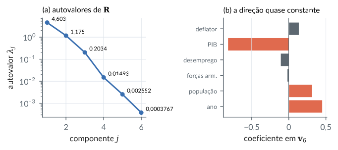
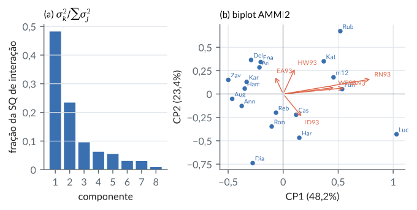
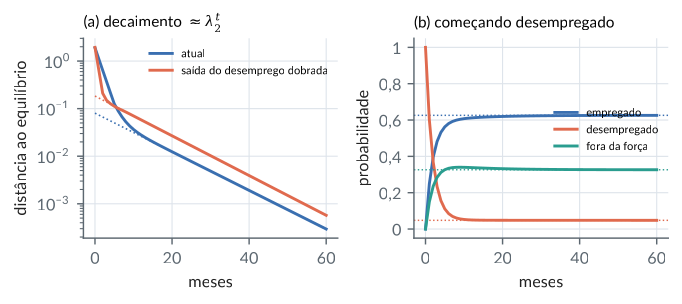
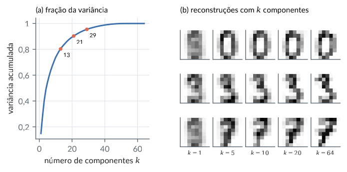
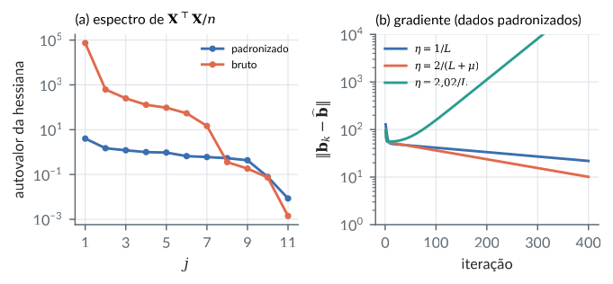
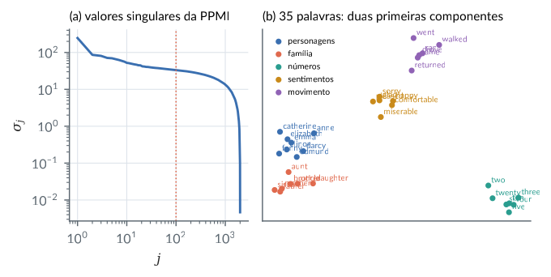
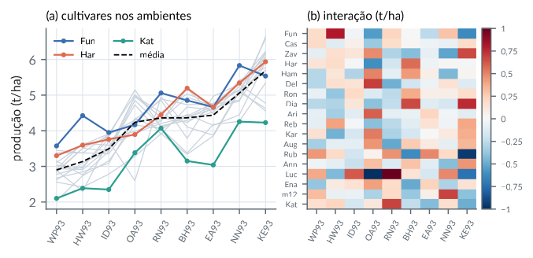

6. Autovalores, decomposição espectral e SVD
Material reprodutível do Capítulo 6 do livro.
Exemplos
Autovalores: traço, determinante, AB e BA, diagonalização
R/cap06/01_autovalores.R
# Cap. 6: Autovalores: traço, determinante, AB e BA, diagonalização
A <- matrix(c(2, 1, 0,
1, 3, 1,
0, 1, 4), 3, byrow = TRUE)
e <- eigen(A)
e$values
c(soma = sum(e$values), traco = sum(diag(A)), produto = prod(e$values), det = det(A))
# Rotação de 90 graus: autovalores complexos +i e -i
eigen(matrix(c(0, -1, 1, 0), 2))$values
# AB e BA têm os mesmos autovalores não nulos
source(file.path("R", "comum", "gerador.R")); g <- gerador(6)
B <- matriz_normal(g, 3, 5); C <- matriz_normal(g, 5, 3)
round(eigen(B %*% C)$values, 6)
round(eigen(C %*% B)$values, 6)
# Diagonalização A = S Lambda S^{-1} e uma matriz não diagonalizável
M <- matrix(c(0.9, 0.2, 0.1, 0.7), 2, byrow = TRUE)
em <- eigen(M); S <- em$vectors
max(abs(S %*% diag(em$values) %*% solve(S) - M))
J <- matrix(c(1, 1, 0, 1), 2, byrow = TRUE) # bloco de Jordan
ej <- eigen(J); ej$values; round(ej$vectors, 8) # dois autovetores (quase) paralelos
qr(ej$vectors, tol = 1e-6)$rank
# Idempotentes têm autovalores 0 e 1
P <- matrix(c(2, -2, -4, -1, 3, 4, 1, -2, -3), 3, byrow = TRUE) # Exercício do Cap. 5
round(eigen(P)$values, 10)Saída
[1] 4.732051 3.000000 1.267949
soma traco produto det
9 9 18 18
[1] 0+1i 0-1i
[1] 4.293393 -1.409740 1.023855
[1] 4.293393+0i -1.409740+0i 1.023855+0i 0.000000+0i 0.000000+0i
[1] 1.110223e-16
[1] 1 1
[,1] [,2]
[1,] 1 -1
[2,] 0 0
[1] 1
[1] 1 1 0python/cap06/01_autovalores.py
"""Cap. 6: Autovalores: traço, determinante, AB e BA, diagonalização."""
import sys
from pathlib import Path
import numpy as np
sys.path.insert(0, str(Path(__file__).resolve().parents[1]))
from comum.gerador import Gerador # noqa: E402
A = np.array([[2.0, 1, 0], [1, 3, 1], [0, 1, 4]])
lam = np.linalg.eigvals(A).real
print("autovalores:", np.sort(lam)[::-1].round(6))
print(f"soma = {lam.sum():.6f}, traço = {np.trace(A)}, produto = {lam.prod():.6f}, det = {np.linalg.det(A):.6f}")
print("rotação:", np.linalg.eigvals(np.array([[0.0, 1], [-1, 0]])))
g = Gerador(6)
B, C = g.matriz_normal(3, 5), g.matriz_normal(5, 3)
print("BC:", np.sort(np.linalg.eigvals(B @ C).real)[::-1].round(6))
print("CB:", np.sort(np.linalg.eigvals(C @ B).real)[::-1].round(6))
J = np.array([[1.0, 1], [0, 1]])
val, vec = np.linalg.eig(J)
print("Jordan: autovalores", val, " posto dos autovetores:", np.linalg.matrix_rank(vec, tol=1e-6))
P = np.array([[2.0, -2, -4], [-1, 3, 4], [1, -2, -3]])
print("idempotente:", np.sort(np.linalg.eigvals(P).real).round(10))Saída
autovalores: [4.732051 3. 1.267949]
soma = 9.000000, traço = 9.0, produto = 18.000000, det = 18.000000
rotação: [0.+1.j 0.-1.j]
BC: [ 4.293393 1.023855 -1.40974 ]
CB: [ 4.293393 1.023855 0. -0. -1.40974 ]
Jordan: autovalores [1.+0.j 1.+0.j] posto dos autovetores: 1
idempotente: [0. 1. 1.]Teorema espectral, projeções espectrais, quociente de Rayleigh e Ky Fan
R/cap06/02_espectral.R
# Cap. 6: Teorema espectral, projeções espectrais, quociente de Rayleigh e Ky Fan
A <- matrix(c(4, 1, 1, 0,
1, 3, 0, 1,
1, 0, 3, 1,
0, 1, 1, 2), 4, byrow = TRUE)
e <- eigen(A, symmetric = TRUE); Q <- e$vectors; lam <- e$values
round(lam, 6)
c(QtQ_menos_I = max(abs(crossprod(Q) - diag(4))), reconstrucao = max(abs(Q %*% diag(lam) %*% t(Q) - A)))
# Projeções espectrais: agrupando autovalores iguais (a menos de arredondamento)
grupos <- split(seq_along(lam), round(lam, 8))
Ps <- lapply(grupos, function(i) Q[, i, drop = FALSE] %*% t(Q[, i, drop = FALSE]))
sapply(Ps, function(P) sum(diag(P))) # multiplicidades
mu <- sapply(grupos, function(i) mean(lam[i])) # autovalores distintos
max(abs(Reduce(`+`, Map(`*`, mu, Ps)) - A)) # A = soma de mu P_mu
# Funções de A: raiz quadrada e inversa
raiz <- Q %*% diag(sqrt(lam)) %*% t(Q)
c(raiz2_menos_A = max(abs(raiz %*% raiz - A)), inversa = max(abs(Q %*% diag(1 / lam) %*% t(Q) - solve(A))))
# Quociente de Rayleigh em 10 000 vetores ao acaso fica em [lambda_min, lambda_max]
source(file.path("R", "comum", "gerador.R")); g <- gerador(62)
X <- matriz_normal(g, 10000, 4)
r <- rowSums((X %*% A) * X) / rowSums(X^2)
c(min = min(r), max = max(r), lambda_min = min(lam), lambda_max = max(lam))
# Ky Fan: tr(V'AV) <= lambda_1 + lambda_2 para V com 2 colunas ortonormais
tr2 <- replicate(2000, { V <- qr.Q(qr(matriz_normal(g, 4, 2))); sum(diag(t(V) %*% A %*% V)) })
c(max_ao_acaso = max(tr2), lambda1_mais_lambda2 = sum(lam[1:2]))Saída
[1] 5.236068 3.000000 3.000000 0.763932
QtQ_menos_I reconstrucao
3.330669e-16 4.440892e-15
0.76393202 3 5.23606798
1 2 1
[1] 4.884981e-15
raiz2_menos_A inversa
5.329071e-15 7.771561e-16
min max lambda_min lambda_max
0.7741419 5.2230349 0.7639320 5.2360680
max_ao_acaso lambda1_mais_lambda2
8.220121 8.236068python/cap06/02_espectral.py
"""Cap. 6: Teorema espectral, projeções espectrais, quociente de Rayleigh e Ky Fan."""
import sys
from pathlib import Path
import numpy as np
sys.path.insert(0, str(Path(__file__).resolve().parents[1]))
from comum.gerador import Gerador # noqa: E402
A = np.array([[4.0, 1, 1, 0], [1, 3, 0, 1], [1, 0, 3, 1], [0, 1, 1, 2]])
lam, Q = np.linalg.eigh(A) # ordem crescente
print("autovalores:", lam.round(6))
print("Q'Q = I:", np.allclose(Q.T @ Q, np.eye(4)), " reconstrução:", np.abs(Q @ np.diag(lam) @ Q.T - A).max())
raiz = Q @ np.diag(np.sqrt(lam)) @ Q.T
print("raiz^2 - A:", np.abs(raiz @ raiz - A).max())
g = Gerador(62)
X = g.matriz_normal(10000, 4)
r = np.einsum("ij,ij->i", X @ A, X) / (X ** 2).sum(1)
print(f"Rayleigh em [{r.min():.4f}, {r.max():.4f}] contido em [{lam.min():.4f}, {lam.max():.4f}]")
tr2 = [np.trace(V.T @ A @ V) for V in (np.linalg.qr(g.matriz_normal(4, 2))[0] for _ in range(2000))]
print(f"Ky Fan: max tr(V'AV) = {max(tr2):.4f} <= {lam[-2:].sum():.4f}")Saída
autovalores: [0.763932 3. 3. 5.236068]
Q'Q = I: True reconstrução: 3.552713678800501e-15
raiz^2 - A: 4.884981308350689e-15
Rayleigh em [0.7741, 5.2230] contido em [0.7639, 5.2361]
Ky Fan: max tr(V'AV) = 8.2201 <= 8.2361Matrizes definidas positivas: critérios, Cholesky, ordem de Loewner
R/cap06/03_definidas.R
# Cap. 6: Matrizes definidas positivas: critérios, Cholesky, ordem de Loewner
A <- matrix(c(4, 2, -2,
2, 10, 4,
-2, 4, 9), 3, byrow = TRUE)
eigen(A, symmetric = TRUE)$values # todos positivos
sapply(1:3, function(k) det(A[1:k, 1:k, drop = FALSE])) # menores principais líderes (Sylvester)
R <- chol(A); R # A = R'R, R triangular superior
c(erro = max(abs(crossprod(R) - A)), logdet_chol = 2 * sum(log(diag(R))), logdet = log(det(A)))
# Semidefinida: menores líderes não negativos não bastam
B <- matrix(c(0, 0, 0, -1), 2)
c(menor1 = B[1, 1], menor2 = det(B), autovalores = eigen(B)$values)
# Ordem de Loewner: A >= C > 0 implica C^{-1} >= A^{-1}
C <- A - diag(c(1, 2, 3)) # A - C é definida positiva
min(eigen(C, symmetric = TRUE)$values) # C > 0
min(eigen(solve(C) - solve(A), symmetric = TRUE)$values) # C^{-1} - A^{-1} >= 0
# Autovalores do suavizador P-spline (Cap. 5) estão em [0, 1]
mc <- read.csv(file.path("dados", "mcycle.csv")); x <- mc$times
h <- (max(x) - min(x)) / 21
Bs <- splines::splineDesign(min(x) + h * (-3:24), x, ord = 4)
D2 <- diff(diag(ncol(Bs)), differences = 2)
S <- Bs %*% solve(crossprod(Bs) + 0.7943282 * crossprod(D2), t(Bs))
ev <- eigen(S, symmetric = TRUE)$values
c(min = min(ev), max = max(ev), iguais_a_1 = sum(ev > 1 - 1e-8), traco = sum(ev))Saída
[1] 13.534743 7.649407 1.815851
[1] 4 36 188
[,1] [,2] [,3]
[1,] 2 1 -1.000000
[2,] 0 3 1.666667
[3,] 0 0 2.285218
erro logdet_chol logdet
0.000000 5.236442 5.236442
menor1 menor2 autovalores1 autovalores2
0 0 0 -1
[1] 0.1252213
[1] 0.0150483
min max iguais_a_1 traco
-6.362257e-16 1.000000e+00 2.000000e+00 1.134408e+01python/cap06/03_definidas.py
"""Cap. 6: Matrizes definidas positivas: critérios, Cholesky, ordem de Loewner."""
from pathlib import Path
import pandas as pd
import numpy as np
from scipy.interpolate import BSpline
A = np.array([[4.0, 2, -2], [2, 10, 4], [-2, 4, 9]])
print("autovalores:", np.linalg.eigvalsh(A).round(6))
print("menores líderes:", [round(np.linalg.det(A[:k, :k]), 6) for k in (1, 2, 3)])
L = np.linalg.cholesky(A) # A = L L', L triangular inferior
print(L.round(6))
print("log det:", 2 * np.log(np.diag(L)).sum(), np.linalg.slogdet(A)[1])
C = A - np.diag([1.0, 2, 3])
print("min autovalor de C^-1 - A^-1:", np.linalg.eigvalsh(np.linalg.inv(C) - np.linalg.inv(A)).min())
mc = pd.read_csv(Path(__file__).resolve().parents[2] / "dados" / "mcycle.csv")
x = mc["times"].to_numpy(); h = (x.max() - x.min()) / 21
Bs = BSpline.design_matrix(x, x.min() + h * np.arange(-3, 25), 3).toarray()
D2 = np.diff(np.eye(Bs.shape[1]), n=2, axis=0)
S = Bs @ np.linalg.solve(Bs.T @ Bs + 0.7943282 * D2.T @ D2, Bs.T)
ev = np.linalg.eigvalsh(S)
print(f"P-spline: autovalores em [{ev.min():.2e}, {ev.max():.6f}], iguais a 1: {(ev > 1 - 1e-8).sum()}, traço = {ev.sum():.4f}")Saída
autovalores: [ 1.815851 7.649407 13.534743]
menores líderes: [np.float64(4.0), np.float64(36.0), np.float64(188.0)]
[[ 2. 0. 0. ]
[ 1. 3. 0. ]
[-1. 1.666667 2.285218]]
log det: 5.236441962829949 5.236441962829949
min autovalor de C^-1 - A^-1: 0.01504829926935157
P-spline: autovalores em [-3.47e-16, 1.000000], iguais a 1: 2, traço = 11.3441Decomposição em valores singulares, subespaços fundamentais e Eckart-Young
R/cap06/04_svd.R
# Cap. 6: Decomposição em valores singulares, subespaços fundamentais e Eckart-Young
A <- matrix(c(1, 2, 0, 1,
2, 4, 1, 1,
3, 6, 1, 2), 3, byrow = TRUE) # a matriz 3 x 4 de posto 2 do Cap. 4
s <- svd(A, nu = 3, nv = 4)
round(s$d, 6) # dois valores singulares não nulos
c(reconstrucao = max(abs(s$u[, 1:3] %*% diag(s$d) %*% t(s$v[, 1:3]) - A)),
autovalores_AtA = max(abs(sort(eigen(crossprod(A), symmetric = TRUE)$values, TRUE)[1:3] - s$d^2)))
# Bases dos quatro subespaços: C(A), N(A'), espaço linha, N(A)
r <- sum(s$d > 1e-10 * s$d[1])
c(A_v_nulo = max(abs(A %*% s$v[, (r + 1):4])), At_u_nulo = max(abs(t(A) %*% s$u[, (r + 1):3])))
# Eckart-Young: a SVD truncada é a melhor aproximação de posto k
source(file.path("R", "comum", "gerador.R")); g <- gerador(64)
X <- matriz_normal(g, 30, 8)
sx <- svd(X); k <- 2
Xk <- sx$u[, 1:k] %*% diag(sx$d[1:k]) %*% t(sx$v[, 1:k])
c(erro_svd = sum((X - Xk)^2), soma_sigma2_descartados = sum(sx$d[-(1:k)]^2))
# Nenhuma de 2000 aproximações de posto 2 escolhidas ao acaso (projeções sobre planos) faz melhor
outras <- replicate(2000, { U <- qr.Q(qr(matriz_normal(g, 30, k))); sum((X - U %*% t(U) %*% X)^2) })
min(outras)Saída
[1] 8.807645 0.652225 0.000000
reconstrucao autovalores_AtA
1.776357e-15 1.421085e-14
A_v_nulo At_u_nulo
4.440892e-16 8.881784e-16
erro_svd soma_sigma2_descartados
140.3816 140.3816
[1] 208.8201python/cap06/04_svd.py
"""Cap. 6: Decomposição em valores singulares, subespaços fundamentais e Eckart-Young."""
import sys
from pathlib import Path
import numpy as np
sys.path.insert(0, str(Path(__file__).resolve().parents[1]))
from comum.gerador import Gerador # noqa: E402
A = np.array([[1.0, 2, 0, 1], [2, 4, 1, 1], [3, 6, 1, 2]])
U, s, Vt = np.linalg.svd(A)
print("valores singulares:", s.round(6))
r = (s > 1e-10 * s[0]).sum()
print("A V_nulo:", np.abs(A @ Vt[r:].T).max(), " A' U_nulo:", np.abs(A.T @ U[:, r:]).max())
g = Gerador(64)
X = g.matriz_normal(30, 8)
U, s, Vt = np.linalg.svd(X, full_matrices=False); k = 2
Xk = U[:, :k] * s[:k] @ Vt[:k]
print(f"Eckart-Young: erro = {((X - Xk) ** 2).sum():.4f}, soma descartados = {(s[k:] ** 2).sum():.4f}")
outras = [((X - (W := np.linalg.qr(g.matriz_normal(30, k))[0]) @ W.T @ X) ** 2).sum() for _ in range(2000)]
print(f"melhor de 2000 aproximações ao acaso: {min(outras):.4f}")Saída
valores singulares: [8.807645 0.652225 0. ]
A V_nulo: 4.440892098500626e-16 A' U_nulo: 8.881784197001252e-16
Eckart-Young: erro = 140.3816, soma descartados = 140.3816
melhor de 2000 aproximações ao acaso: 208.8201Raio espectral, série de Neumann e matrizes estocásticas positivas
R/cap06/05_potencias.R
# Cap. 6: Raio espectral, série de Neumann e matrizes estocásticas positivas
raio <- function(M) max(Mod(eigen(M)$values))
# Uma matriz com raio espectral < 1 mas norma "grande": A^k -> 0 depois de crescer
A <- matrix(c(0.5, 4, 0, 0.6), 2, byrow = TRUE)
c(raio = raio(A), max_entrada = max(abs(A)))
pot <- function(M, k) { R <- diag(nrow(M)); for (i in seq_len(k)) R <- R %*% M; R }
sapply(c(1, 2, 5, 10, 20, 50), function(k) max(abs(pot(A, k))))
# Série de Neumann (insumo-produto de Leontief, coeficientes técnicos hipotéticos)
Tc <- matrix(c(0.20, 0.30, 0.10,
0.10, 0.25, 0.20,
0.15, 0.10, 0.30), 3, byrow = TRUE,
dimnames = list(c("agro", "indústria", "serviços"), c("agro", "indústria", "serviços")))
raio(Tc)
Lt <- solve(diag(3) - Tc) # matriz inversa de Leontief
soma <- diag(3); termo <- diag(3)
for (k in 1:60) { termo <- termo %*% Tc; soma <- soma + termo }
c(erro_neumann = max(abs(soma - Lt)))
round(Lt, 4)
round(colSums(Lt), 4) # multiplicadores de produção
# Contração da oscilação por uma matriz estocástica positiva
P <- matrix(c(0.960, 0.015, 0.025,
0.250, 0.600, 0.150,
0.040, 0.030, 0.930), 3, byrow = TRUE) # mercado de trabalho (Cap. 4)
delta <- min(P); c(delta = delta, fator = 1 - 3 * delta)
osc <- function(v) max(v) - min(v)
v <- c(1, 0, 0); r <- numeric(6)
for (k in 1:6) { w <- drop(P %*% v); r[k] <- osc(w) / osc(v); v <- w }
round(r, 4) # sempre <= 1 - n deltaSaída
raio max_entrada
0.6 4.0
[1] 4.000000e+00 4.400000e+00 1.860400e+00 2.028022e-01 1.424316e-03
[6] 3.232770e-10
[1] 0.5628374
erro_neumann
1.110223e-15
agro indústria serviços
agro 1.3960 0.6082 0.3732
indústria 0.2764 1.5066 0.4699
serviços 0.3386 0.3455 1.5757
agro indústria serviços
2.0111 2.4603 2.4188
delta fator
0.015 0.955
[1] 0.9200 0.9166 0.9144 0.9131 0.9122 0.9117python/cap06/05_potencias.py
"""Cap. 6: Raio espectral, série de Neumann e matrizes estocásticas positivas."""
import numpy as np
raio = lambda M: np.abs(np.linalg.eigvals(M)).max()
A = np.array([[0.5, 4.0], [0.0, 0.6]])
print("raio:", raio(A), " max|A^k|:", [round(np.abs(np.linalg.matrix_power(A, k)).max(), 6) for k in (1, 2, 5, 10, 20, 50)])
T = np.array([[0.20, 0.30, 0.10], [0.10, 0.25, 0.20], [0.15, 0.10, 0.30]])
Lt = np.linalg.inv(np.eye(3) - T)
soma = sum(np.linalg.matrix_power(T, k) for k in range(61))
print(f"raio(T) = {raio(T):.4f}, erro de Neumann = {np.abs(soma - Lt).max():.1e}")
print(Lt.round(4), "\nmultiplicadores:", Lt.sum(0).round(4))
P = np.array([[0.960, 0.015, 0.025], [0.250, 0.600, 0.150], [0.040, 0.030, 0.930]])
osc = lambda v: v.max() - v.min()
v = np.array([1.0, 0, 0]); razoes = []
for _ in range(6):
w = P @ v; razoes.append(osc(w) / osc(v)); v = w
print("1 - n delta =", 1 - 3 * P.min(), " razões:", np.round(razoes, 4))Saída
raio: 0.6 max|A^k|: [np.float64(4.0), np.float64(4.4), np.float64(1.8604), np.float64(0.202802), np.float64(0.001424), np.float64(0.0)]
raio(T) = 0.5628, erro de Neumann = 1.1e-15
[[1.396 0.6082 0.3732]
[0.2764 1.5066 0.4699]
[0.3386 0.3455 1.5757]]
multiplicadores: [2.0111 2.4603 2.4188]
1 - n delta = 0.955 razões: [0.92 0.9166 0.9144 0.9131 0.9122 0.9117]Componentes principais e quase colinearidade nos dados de Longley
R/cap06/06_longley_pca.R
# Cap. 6: Componentes principais e quase colinearidade nos dados de Longley
L <- read.csv(file.path("dados", "longley.csv"))
X <- as.matrix(L[, c("GNP.deflator", "GNP", "Unemployed", "Armed.Forces", "Population", "Year")])
R <- cor(X) # matriz de correlações (variáveis padronizadas)
e <- eigen(R, symmetric = TRUE)
round(e$values, 5)
round(cumsum(e$values) / ncol(X), 4) # proporção acumulada da variância
c(kappa = max(e$values) / min(e$values)) # número de condição de R
V <- e$vectors; rownames(V) <- colnames(X)
round(V[, c(1, 2, 6)], 3) # 1a, 2a e última componentes
# A última componente é quase constante: a combinação v6' z tem variância lambda_6
Z <- scale(X)
c(var_ultima = var(drop(Z %*% V[, 6])), lambda6 = e$values[6])
# Fatores de inflação da variância: diagonal de R^{-1} = sum_j v_ij^2 / lambda_j
vif <- diag(solve(R))
round(rbind(vif = vif, espectral = rowSums(V^2 %*% diag(1 / e$values))), 1)
# Contribuição da última componente para cada VIF
round(V[, 6]^2 / e$values[6] / vif, 3)Saída
[1] 4.60338 1.17534 0.20343 0.01493 0.00255 0.00038
[1] 0.7672 0.9631 0.9970 0.9995 0.9999 1.0000
kappa
12220.01
[,1] [,2] [,3]
GNP.deflator -0.462 0.058 0.135
GNP -0.462 0.053 -0.818
Unemployed -0.321 -0.596 -0.107
Armed.Forces -0.202 0.798 -0.018
Population -0.462 -0.046 0.312
Year -0.465 0.001 0.450
var_ultima lambda6
0.0003767081 0.0003767081
GNP.deflator GNP Unemployed Armed.Forces Population Year
vif 135.5 1788.5 33.6 3.6 399.2 759
espectral 135.5 1788.5 33.6 3.6 399.2 759
GNP.deflator GNP Unemployed Armed.Forces Population Year
0.358 0.994 0.912 0.239 0.646 0.710python/cap06/06_longley_pca.py
"""Cap. 6: Componentes principais e quase colinearidade nos dados de Longley."""
from pathlib import Path
import numpy as np
import pandas as pd
L = pd.read_csv(Path(__file__).resolve().parents[2] / "dados" / "longley.csv")
nomes = ["GNP.deflator", "GNP", "Unemployed", "Armed.Forces", "Population", "Year"]
R = np.corrcoef(L[nomes].to_numpy().T)
lam, V = np.linalg.eigh(R); lam, V = lam[::-1], V[:, ::-1]
print("autovalores:", lam.round(5), "\nacumulada:", (lam.cumsum() / 6).round(4))
print(f"kappa = {lam[0] / lam[-1]:.1f}")
print(pd.DataFrame(V[:, [0, 1, 5]], index=nomes, columns=["CP1", "CP2", "CP6"]).round(3))
vif = np.diag(np.linalg.inv(R))
print("VIF:", vif.round(1))
print("VIF espectral:", ((V ** 2) @ (1 / lam)).round(1))Saída
autovalores: [4.60338e+00 1.17534e+00 2.03430e-01 1.49300e-02 2.55000e-03 3.80000e-04]
acumulada: [0.7672 0.9631 0.997 0.9995 0.9999 1. ]
kappa = 12220.0
CP1 CP2 CP6
GNP.deflator -0.462 -0.058 0.135
GNP -0.462 -0.053 -0.818
Unemployed -0.321 0.596 -0.107
Armed.Forces -0.202 -0.798 -0.018
Population -0.462 0.046 0.312
Year -0.465 -0.001 0.450
VIF: [ 135.5 1788.5 33.6 3.6 399.2 759. ]
VIF espectral: [ 135.5 1788.5 33.6 3.6 399.2 759. ]Figura: longley pca
python/cap06/fig_cap06.py
def fig_longley():
L = pd.read_csv(DADOS / "longley.csv")
nomes = ["GNP.deflator", "GNP", "Unemployed", "Armed.Forces", "Population", "Year"]
rot = ["deflator", "PIB", "desemprego", "forças arm.", "população", "ano"]
lam, V = np.linalg.eigh(np.corrcoef(L[nomes].to_numpy().T)); lam, V = lam[::-1], V[:, ::-1]
v6 = V[:, 5] * np.sign(V[1, 5]) * -1
fig, (a1, a2) = plt.subplots(1, 2, figsize=(LARG, 2.4))
a1.semilogy(np.arange(1, 7), lam, "o-", color=CATEG[0], ms=4)
for k, l in enumerate(lam):
a1.annotate(f"{l:.4g}".replace(".", ","), (k + 1, l), xytext=(5, 2), textcoords="offset points", fontsize=6.3)
a1.set_xlabel("componente $j$"); a1.set_ylabel(r"autovalor $\lambda_j$")
a1.set_title("(a) autovalores de $\\mathbf{R}$", fontsize=8.5, loc="left")
a2.barh(np.arange(6), v6, color=[CATEG[1] if abs(t) > 0.25 else COR["cinza"] for t in v6])
a2.set_yticks(np.arange(6), rot, fontsize=7); a2.invert_yaxis()
a2.axvline(0, color=COR["cinza"], lw=0.5)
a2.set_xlabel("coeficiente em $\\mathbf{v}_6$")
a2.set_title("(b) a direção quase constante", fontsize=8.5, loc="left")
a2.grid(axis="y", visible=False)
virgula(a2, "x")
fig.tight_layout()
salvar(fig, CAP, "longley_pca")Trecho de python/cap06/fig_cap06.py, que traz também as importações e o estilo.

Interação genótipo x ambiente pela SVD: o modelo AMMI (trigo de inverno, Ontário, 1993)
R/cap06/07_ammi.R
# Cap. 6: Interação genótipo x ambiente pela SVD: o modelo AMMI (trigo de inverno, Ontário, 1993)
w <- read.csv(file.path("dados", "yan_trigo.csv"))
Y <- with(w, tapply(producao, list(genotipo, ambiente), mean)) # 18 genótipos x 9 ambientes
dim(Y)
m <- mean(Y); a <- rowMeans(Y) - m; b <- colMeans(Y) - m
I <- Y - m - outer(a, rep(1, ncol(Y))) - outer(rep(1, nrow(Y)), b) # interação (duplo centrado)
c(soma_linhas = max(abs(rowSums(I))), soma_colunas = max(abs(colSums(I))))
SQ <- c(genotipos = ncol(Y) * sum(a^2), ambientes = nrow(Y) * sum(b^2), interacao = sum(I^2))
round(rbind(SQ = SQ, proporcao = SQ / sum((Y - m)^2)), 3)
s <- svd(I)
round(s$d, 3)
c(posto = sum(s$d > 1e-10), maximo = min(dim(Y)) - 1)
round(rbind(proporcao = s$d^2 / sum(s$d^2), acumulada = cumsum(s$d^2) / sum(s$d^2)), 3)
# Escores AMMI2 (sigma_k^{1/2} u_k e sigma_k^{1/2} v_k)
G <- s$u[, 1:2] %*% diag(sqrt(s$d[1:2])); E <- s$v[, 1:2] %*% diag(sqrt(s$d[1:2]))
dimnames(G) <- list(rownames(Y), c("CP1", "CP2")); dimnames(E) <- list(colnames(Y), c("CP1", "CP2"))
round(E, 2)
round(G[order(-abs(G[, 1]))[1:5], ], 2)
# Eckart-Young: o erro do AMMI2 na interação é a soma dos sigma^2 descartados
I2 <- G %*% t(E)
c(erro = sum((I - I2)^2), descartados = sum(s$d[-(1:2)]^2))
# Previsão AMMI2 para o genótipo de maior escore no ambiente de menor escore
c(observado = Y["Luc", "OA93"], aditivo = m + a["Luc"] + b["OA93"], ammi2 = m + a["Luc"] + b["OA93"] + I2["Luc", "OA93"])Saída
[1] 18 9
soma_linhas soma_colunas
4.884981e-15 9.769963e-15
genotipos ambientes interacao
SQ 22.671 114.536 19.958
proporcao 0.144 0.729 0.127
[1] 3.103 2.162 1.381 1.120 1.046 0.783 0.778 0.427 0.000
posto maximo
8 8
[,1] [,2] [,3] [,4] [,5] [,6] [,7] [,8] [,9]
proporcao 0.482 0.234 0.095 0.063 0.055 0.031 0.030 0.009 0
acumulada 0.482 0.717 0.812 0.875 0.930 0.961 0.991 1.000 1
CP1 CP2
BH93 -0.17 -0.86
EA93 -0.08 0.20
HW93 0.11 0.29
ID93 0.18 -0.26
KE93 -0.95 -0.59
NN93 0.57 0.07
OA93 -0.96 0.92
RN93 0.81 0.16
WP93 0.48 0.07
CP1 CP2
Luc 1.03 -0.43
Fun 0.54 0.05
Rub 0.52 0.67
Zav -0.50 0.15
Aug -0.46 -0.05
erro descartados
5.655011 5.655011
observado aditivo.Luc ammi2.Luc
2.596000 3.845796 2.465508python/cap06/07_ammi.py
"""Cap. 6: Interação genótipo x ambiente pela SVD: o modelo AMMI."""
from pathlib import Path
import numpy as np
import pandas as pd
w = pd.read_csv(Path(__file__).resolve().parents[2] / "dados" / "yan_trigo.csv")
Y = w.pivot_table(index="genotipo", columns="ambiente", values="producao")
m = Y.to_numpy().mean(); a = Y.mean(axis=1) - m; b = Y.mean(axis=0) - m
I = Y.sub(a, axis=0).sub(b, axis=1) - m
SQ = {"genótipos": Y.shape[1] * (a ** 2).sum(), "ambientes": Y.shape[0] * (b ** 2).sum(), "interação": (I ** 2).to_numpy().sum()}
tot = ((Y - m) ** 2).to_numpy().sum()
for k, v in SQ.items():
print(f"{k:10s} SQ = {v:8.3f} proporção = {v / tot:.3f}")
U, s, Vt = np.linalg.svd(I.to_numpy())
print("valores singulares:", s.round(3))
print("proporção acumulada:", (np.cumsum(s ** 2) / (s ** 2).sum()).round(3))
G = U[:, :2] * np.sqrt(s[:2]); E = Vt[:2].T * np.sqrt(s[:2])
print(pd.DataFrame(E, index=Y.columns, columns=["CP1", "CP2"]).round(2))
I2 = G @ E.T
print(f"Eckart-Young: erro = {((I.to_numpy() - I2) ** 2).sum():.4f}, descartados = {(s[2:] ** 2).sum():.4f}")Saída
genótipos SQ = 22.671 proporção = 0.144
ambientes SQ = 114.536 proporção = 0.729
interação SQ = 19.958 proporção = 0.127
valores singulares: [3.103 2.162 1.381 1.12 1.046 0.783 0.778 0.427 0. ]
proporção acumulada: [0.482 0.717 0.812 0.875 0.93 0.961 0.991 1. 1. ]
CP1 CP2
ambiente
BH93 -0.17 -0.86
EA93 -0.08 0.20
HW93 0.11 0.29
ID93 0.18 -0.26
KE93 -0.95 -0.59
NN93 0.57 0.07
OA93 -0.96 0.92
RN93 0.81 0.16
WP93 0.48 0.07
Eckart-Young: erro = 5.6550, descartados = 5.6550Figura: ammi trigo
python/cap06/fig_cap06.py
def fig_ammi():
w = pd.read_csv(DADOS / "yan_trigo.csv")
Y = w.pivot_table(index="genotipo", columns="ambiente", values="producao")
m = Y.to_numpy().mean()
I = (Y.sub(Y.mean(axis=1), axis=0).sub(Y.mean(axis=0), axis=1) + m).to_numpy()
U, s, Vt = np.linalg.svd(I)
G = U[:, :2] * np.sqrt(s[:2]); E = Vt[:2].T * np.sqrt(s[:2])
fig, (a1, a2) = plt.subplots(1, 2, figsize=(LARG, 2.7), gridspec_kw={"width_ratios": [1, 1.5]})
prop = s ** 2 / (s ** 2).sum()
a1.bar(np.arange(1, len(s)), prop[:-1], color=CATEG[0]); a1.set_xticks(range(1, 9))
a1.set_xlabel("componente"); a1.set_ylabel("fração da SQ de interação")
a1.set_title("(a) $\\sigma_k^2/\\sum\\sigma_j^2$", fontsize=8.5, loc="left")
a1.grid(axis="x", visible=False); virgula(a1, "y")
a2.axhline(0, color=COR["cinza"], lw=0.5); a2.axvline(0, color=COR["cinza"], lw=0.5)
a2.scatter(G[:, 0], G[:, 1], s=10, color=CATEG[0], zorder=3)
for k, nome in enumerate(Y.index):
a2.annotate(nome, G[k], xytext=(2, 2), textcoords="offset points", fontsize=5.8, color=CATEG[0])
for k, nome in enumerate(Y.columns):
a2.annotate("", E[k], (0, 0), arrowprops=dict(arrowstyle="->", color=CATEG[1], lw=0.8))
a2.annotate(nome, E[k], xytext=(2, -6 if E[k, 1] < 0 else 2), textcoords="offset points", fontsize=5.8, color=CATEG[1])
a2.set_xlabel(f"CP1 ({100 * prop[0]:.1f}%)".replace(".", ","))
a2.set_ylabel(f"CP2 ({100 * prop[1]:.1f}%)".replace(".", ","))
a2.set_title("(b) biplot AMMI2", fontsize=8.5, loc="left")
virgula(a2)
fig.tight_layout()
salvar(fig, CAP, "ammi_trigo")Trecho de python/cap06/fig_cap06.py, que traz também as importações e o estilo.

Velocidade de convergência do mercado de trabalho para o equilíbrio
R/cap06/08_markov_convergencia.R
# Cap. 6: Velocidade de convergência do mercado de trabalho para o equilíbrio
estados <- c("E", "D", "F")
P <- matrix(c(0.960, 0.015, 0.025,
0.250, 0.600, 0.150,
0.040, 0.030, 0.930), 3, byrow = TRUE, dimnames = list(estados, estados))
e <- eigen(P)
e$values # 1 e dois autovalores reais menores que 1
pi <- Re(eigen(t(P))$vectors[, 1]); pi <- pi / sum(pi); names(pi) <- estados
round(pi, 4)
# Decomposição espectral (P é diagonalizável): P^t = 1 pi' + sum lambda_i^t s_i w_i'
S <- e$vectors; W <- solve(S) # linhas de W: autovetores à esquerda
dimnames(S) <- list(estados, c("v1", "v2", "v3")); round(S, 3) # autovetores à direita
P_t <- function(t) Re(S %*% diag(e$values^t) %*% W)
c(erro_t12 = max(abs(P_t(12) - Reduce(`%*%`, rep(list(P), 12)))))
meia_vida <- log(2) / -log(e$values[2])
c(lambda2 = e$values[2], meia_vida_meses = meia_vida)
# Desempregado hoje: distância à distribuição de equilíbrio ao longo do tempo
x <- c(0, 1, 0)
dist <- sapply(c(1, 3, 6, 12, 24, 36), function(t) sum(abs(x %*% P_t(t) - pi)))
round(rbind(meses = c(1, 3, 6, 12, 24, 36), distancia = dist, razao_lambda2 = dist / e$values[2]^c(1, 3, 6, 12, 24, 36)), 4)
# Uma política que dobra a taxa de saída do desemprego para o emprego
P2 <- P; P2["D", ] <- c(0.50, 0.35, 0.15)
e2 <- eigen(P2)$values
pi2 <- Re(eigen(t(P2))$vectors[, 1]); pi2 <- pi2 / sum(pi2)
round(c(lambda2 = e2[2], meia_vida = log(2) / -log(e2[2]), desemprego = pi2[2] / (pi2[1] + pi2[2])), 4)Saída
[1] 1.0000000 0.9107558 0.5792442
E D F
0.6258 0.0479 0.3262
v1 v2 v3
E -0.577 -0.465 0.034
D -0.577 0.053 -0.996
F -0.577 0.884 0.081
erro_t12
3.885781e-15
lambda2 meia_vida_meses
0.9107558 7.4148911
[,1] [,2] [,3] [,4] [,5] [,6]
meses 1.0000 3.0000 6.0000 12.0000 24.0000 36.0000
distancia 1.1041 0.3721 0.0901 0.0278 0.0085 0.0028
razao_lambda2 1.2123 0.4925 0.1579 0.0855 0.0804 0.0804
lambda2 meia_vida desemprego
0.9083 7.2043 0.0421python/cap06/08_markov_convergencia.py
"""Cap. 6: Velocidade de convergência do mercado de trabalho para o equilíbrio."""
import numpy as np
P = np.array([[0.960, 0.015, 0.025], [0.250, 0.600, 0.150], [0.040, 0.030, 0.930]])
val, S = np.linalg.eig(P)
ordem = np.argsort(-val.real); val, S = val[ordem].real, S[:, ordem]
pi = np.linalg.inv(S)[0].real; pi = pi / pi.sum()
print("autovalores:", val.round(7), " pi:", pi.round(4))
print(f"meia-vida = {np.log(2) / -np.log(val[1]):.4f} meses")
x = np.array([0.0, 1, 0])
for t in (1, 3, 6, 12, 24, 36):
d = np.abs(x @ np.linalg.matrix_power(P, t) - pi).sum()
print(f"t = {t:2d}: distância = {d:.4f}, distância / lambda2^t = {d / val[1] ** t:.4f}")Saída
autovalores: [1. 0.9107558 0.5792442] pi: [0.6258 0.0479 0.3262]
meia-vida = 7.4149 meses
t = 1: distância = 1.1041, distância / lambda2^t = 1.2123
t = 3: distância = 0.3721, distância / lambda2^t = 0.4925
t = 6: distância = 0.0901, distância / lambda2^t = 0.1579
t = 12: distância = 0.0278, distância / lambda2^t = 0.0855
t = 24: distância = 0.0085, distância / lambda2^t = 0.0804
t = 36: distância = 0.0028, distância / lambda2^t = 0.0804Figura: markov convergencia
python/cap06/fig_cap06.py
def fig_markov():
P = np.array([[0.960, 0.015, 0.025], [0.250, 0.600, 0.150], [0.040, 0.030, 0.930]])
P2 = P.copy(); P2[1] = [0.50, 0.35, 0.15]
fig, (a1, a2) = plt.subplots(1, 2, figsize=(LARG, 2.4))
ts = np.arange(0, 61)
for c, (nome, M) in enumerate((("atual", P), ("saída do desemprego dobrada", P2))):
val, vec = np.linalg.eig(M.T); pi = np.real(vec[:, np.argmax(val.real)]); pi /= pi.sum()
lam2 = np.sort(np.abs(val))[-2]
x = np.array([0.0, 1, 0]); d = []
for _ in ts:
d.append(np.abs(x - pi).sum()); x = x @ M
a1.semilogy(ts, d, color=CATEG[c], label=nome)
a1.semilogy(ts, d[24] * lam2 ** (ts - 24.0), color=CATEG[c], ls=":", lw=0.9)
if c == 0:
traj = np.array([np.array([0.0, 1, 0]) @ np.linalg.matrix_power(M, t) for t in ts])
for j, rot in enumerate(("empregado", "desempregado", "fora da força")):
a2.plot(ts, traj[:, j], color=CATEG[j], label=rot)
a2.axhline(pi[j], color=CATEG[j], ls=":", lw=0.8)
a1.set_xlabel("meses"); a1.set_ylabel("distância ao equilíbrio")
a1.legend(fontsize=6.2, loc="upper right")
a1.set_title("(a) decaimento $\\approx\\lambda_2^t$", fontsize=8.5, loc="left")
a2.set_xlabel("meses"); a2.set_ylabel("probabilidade")
a2.legend(fontsize=6.2, loc="lower right", bbox_to_anchor=(1.0, 0.38))
a2.set_title("(b) começando desempregado", fontsize=8.5, loc="left")
virgula(a2, "y")
fig.tight_layout()
salvar(fig, CAP, "markov_convergencia")Trecho de python/cap06/fig_cap06.py, que traz também as importações e o estilo.

Componentes principais dos dígitos manuscritos e o teorema de Eckart-Young
R/cap06/09_digitos_pca.R
# Cap. 6: Componentes principais dos dígitos manuscritos e o teorema de Eckart-Young
dig <- read.csv(file.path("dados", "digitos.csv"))
X <- as.matrix(dig[, -1]); n <- nrow(X) # 1797 imagens de 8 x 8 pixels
Xc <- scale(X, scale = FALSE) # centra (não padroniza)
s <- svd(Xc)
var_exp <- s$d^2 / sum(s$d^2)
round(cumsum(var_exp)[c(1, 2, 5, 10, 20, 30, 40)], 3)
sapply(c(0.80, 0.90, 0.95, 0.99), function(q) which(cumsum(var_exp) >= q)[1])
# Autovalores da covariância amostral = sigma^2 / (n - 1)
c(diferenca = max(abs(eigen(cov(X), symmetric = TRUE)$values - s$d^2 / (n - 1))))
# Erro de reconstrução com k componentes = soma dos sigma^2 descartados (Eckart-Young)
erro <- function(k) { Xk <- s$u[, 1:k] %*% diag(s$d[1:k], k) %*% t(s$v[, 1:k]); sum((Xc - Xk)^2) }
ks <- c(2, 10, 20, 40)
round(rbind(k = ks, erro = sapply(ks, erro), descartados = sapply(ks, function(k) sum(s$d[-(1:k)]^2)),
relativo = sapply(ks, erro) / sum(s$d^2)), 3)
# Classificação por vizinho mais próximo (1-NN) no espaço das k primeiras componentes
treino <- 1:1000; teste <- 1001:n
acuracia <- function(k) {
Z <- Xc %*% s$v[, 1:k, drop = FALSE] # (a SVD usou todas as imagens, sem os rótulos)
d2 <- outer(rowSums(Z[teste, , drop = FALSE]^2), rowSums(Z[treino, , drop = FALSE]^2), "+") -
2 * Z[teste, , drop = FALSE] %*% t(Z[treino, , drop = FALSE])
mean(dig$digito[treino][apply(d2, 1, which.min)] == dig$digito[teste])
}
round(sapply(c(2, 5, 10, 20, 40, 64), acuracia), 4)Saída
[1] 0.149 0.285 0.545 0.738 0.894 0.959 0.988
[1] 13 21 29 41
diferenca
3.694822e-13
[,1] [,2] [,3] [,4]
k 2.000 10.000 20.000 40.000
erro 1543523.771 565183.403 228205.627 25470.974
descartados 1543523.771 565183.403 228205.627 25470.974
relativo 0.715 0.262 0.106 0.012
[1] 0.5935 0.8632 0.9348 0.9586 0.9624 0.9624python/cap06/09_digitos_pca.py
"""Cap. 6: Componentes principais dos dígitos manuscritos e o teorema de Eckart-Young."""
from pathlib import Path
import numpy as np
import pandas as pd
dig = pd.read_csv(Path(__file__).resolve().parents[2] / "dados" / "digitos.csv")
X = dig.drop(columns="digito").to_numpy(float); y = dig["digito"].to_numpy()
Xc = X - X.mean(0)
U, s, Vt = np.linalg.svd(Xc, full_matrices=False)
ac = np.cumsum(s ** 2) / (s ** 2).sum()
print("variância acumulada (k = 1, 2, 5, 10, 20, 30, 40):", ac[[0, 1, 4, 9, 19, 29, 39]].round(3))
print("k para 80, 90, 95, 99%:", [int(np.argmax(ac >= q)) + 1 for q in (0.8, 0.9, 0.95, 0.99)])
for k in (2, 10, 20, 40):
erro = ((Xc - U[:, :k] * s[:k] @ Vt[:k]) ** 2).sum()
print(f"k = {k:2d}: erro = {erro:.1f}, descartados = {(s[k:] ** 2).sum():.1f}")
tr, te = np.arange(1000), np.arange(1000, len(y))
for k in (2, 5, 10, 20, 40, 64):
Z = Xc @ Vt[:k].T
d2 = (Z[te] ** 2).sum(1)[:, None] + (Z[tr] ** 2).sum(1)[None, :] - 2 * Z[te] @ Z[tr].T
print(f"k = {k:2d}: acurácia 1-NN = {np.mean(y[tr][d2.argmin(1)] == y[te]):.4f}")Saída
variância acumulada (k = 1, 2, 5, 10, 20, 30, 40): [0.149 0.285 0.545 0.738 0.894 0.959 0.988]
k para 80, 90, 95, 99%: [13, 21, 29, 41]
k = 2: erro = 1543523.8, descartados = 1543523.8
k = 10: erro = 565183.4, descartados = 565183.4
k = 20: erro = 228205.6, descartados = 228205.6
k = 40: erro = 25471.0, descartados = 25471.0
k = 2: acurácia 1-NN = 0.5935
k = 5: acurácia 1-NN = 0.8632
k = 10: acurácia 1-NN = 0.9348
k = 20: acurácia 1-NN = 0.9586
k = 40: acurácia 1-NN = 0.9624
k = 64: acurácia 1-NN = 0.9624Figura: digitos pca
python/cap06/fig_cap06.py
def fig_digitos():
dig = pd.read_csv(DADOS / "digitos.csv")
X = dig.drop(columns="digito").to_numpy(float); mu = X.mean(0); Xc = X - mu
U, s, Vt = np.linalg.svd(Xc, full_matrices=False)
ac = np.cumsum(s ** 2) / (s ** 2).sum()
fig = plt.figure(figsize=(LARG, 2.6))
a1 = fig.add_axes([0.08, 0.17, 0.33, 0.72])
a1.plot(np.arange(1, 65), ac, color=CATEG[0])
for q in (0.8, 0.9, 0.95):
k = int(np.argmax(ac >= q)) + 1
a1.plot(k, ac[k - 1], "o", ms=3, color=CATEG[1])
a1.annotate(f"{k}", (k, ac[k - 1]), xytext=(3, -9), textcoords="offset points", fontsize=6.5)
a1.set_xlabel("número de componentes $k$"); a1.set_ylabel("variância acumulada")
a1.set_title("(a) fração da variância", fontsize=8.5, loc="left")
virgula(a1, "y")
ks = [1, 5, 10, 20, 64]; ex = [0, 3, 7]
fig.text(0.50, 0.92, "(b) reconstruções com $k$ componentes", fontsize=8.5)
for i, idx in enumerate(ex):
for j, k in enumerate(ks):
ax = fig.add_axes([0.50 + j * 0.095, 0.62 - i * 0.26, 0.085, 0.22])
img = mu + U[idx, :k] * s[:k] @ Vt[:k]
ax.imshow(img.reshape(8, 8), cmap="Greys", vmin=0, vmax=16)
ax.set_xticks([]); ax.set_yticks([]); ax.grid(False)
if i == 2:
ax.set_xlabel(f"$k={k}$", fontsize=6.5)
salvar(fig, CAP, "digitos_pca")Trecho de python/cap06/fig_cap06.py, que traz também as importações e o estilo.

Gradiente descendente: taxa de aprendizado, autovalores da hessiana e padronização
R/cap06/10_gradiente_curvatura.R
# Cap. 6: Gradiente descendente: taxa de aprendizado, autovalores da hessiana e padronização
db <- read.csv(file.path("dados", "diabetes.csv"))
y <- db$y; n <- length(y)
X_bruto <- cbind(1, as.matrix(db[, 1:10]))
X_pad <- cbind(1, scale(db[, 1:10]))
# A hessiana da perda f(b) = ||y - X b||^2 / (2n) é H = X'X / n
espectro <- function(X) { ev <- eigen(crossprod(X) / n, symmetric = TRUE)$values; c(max = max(ev), min = min(ev), kappa = max(ev) / min(ev)) }
signif(rbind(bruto = espectro(X_bruto), padronizado = espectro(X_pad)), 4)
gd <- function(X, eta, iter) {
bs <- solve(crossprod(X), crossprod(X, y)) # mínimo exato
b <- rep(0, ncol(X)); d <- numeric(iter)
for (k in 1:iter) { b <- b - eta * drop(crossprod(X, X %*% b - y)) / n; d[k] <- sqrt(sum((b - bs)^2)) }
d
}
ev <- eigen(crossprod(X_pad) / n, symmetric = TRUE)$values
L <- max(ev); mu <- min(ev)
etas <- c(meio = 1 / L, otimo = 2 / (L + mu), quase_2 = 1.98 / L, acima_2 = 2.02 / L)
R <- sapply(etas, function(eta) gd(X_pad, eta, 500))
signif(R[c(1, 10, 100, 500), ], 4)
# Fator de contração previsto, max |1 - eta lambda_i|, e o observado no fim
fator <- sapply(etas, function(eta) max(abs(1 - eta * ev)))
observado <- (R[500, ] / R[400, ])^(1 / 100)
round(rbind(previsto = fator, observado = observado), 5)
# Iterações para reduzir o erro por 10^6, com o passo ótimo
kap <- L / mu
c(kappa = kap, iteracoes = log(1e6) / -log((kap - 1) / (kap + 1)))Saída
max min kappa
bruto 73590.000 0.001405 5.237e+07
padronizado 4.015 0.008541 4.701e+02
meio otimo quase_2 acima_2
[1,] 127.90 96.120 96.550 95.47
[2,] 51.03 53.200 52.130 55.55
[3,] 41.38 36.240 33.690 158.20
[4,] 17.65 6.609 6.204 425900.00
meio otimo quase_2 acima_2
previsto 0.99787 0.99575 0.99579 1.02
observado 0.99787 0.99575 0.99579 1.02
kappa iteracoes
470.078 3247.179python/cap06/10_gradiente_curvatura.py
"""Cap. 6: Gradiente descendente: taxa de aprendizado, autovalores da hessiana e padronização."""
from pathlib import Path
import numpy as np
import pandas as pd
db = pd.read_csv(Path(__file__).resolve().parents[2] / "dados" / "diabetes.csv")
y = db["y"].to_numpy(float); n = len(y); Z = db.iloc[:, :10].to_numpy(float)
Xb = np.column_stack([np.ones(n), Z])
Xp = np.column_stack([np.ones(n), (Z - Z.mean(0)) / Z.std(0, ddof=1)])
for nome, X in (("bruto", Xb), ("padronizado", Xp)):
ev = np.linalg.eigvalsh(X.T @ X / n)
print(f"{nome:11s} lambda_max = {ev.max():.4g}, lambda_min = {ev.min():.4g}, kappa = {ev.max() / ev.min():.4g}")
ev = np.linalg.eigvalsh(Xp.T @ Xp / n); Lm, mu = ev.max(), ev.min()
bs = np.linalg.solve(Xp.T @ Xp, Xp.T @ y)
for nome, eta in {"1/L": 1 / Lm, "ótimo": 2 / (Lm + mu), "1,98/L": 1.98 / Lm, "2,02/L": 2.02 / Lm}.items():
b = np.zeros(11); d = []
for _ in range(500):
b = b - eta * Xp.T @ (Xp @ b - y) / n; d.append(np.linalg.norm(b - bs))
print(f"eta = {nome:7s} erro após 1, 10, 100, 500 passos: {np.round([d[0], d[9], d[99], d[499]], 3)}; "
f"fator previsto {np.abs(1 - eta * ev).max():.5f}")Saída
bruto lambda_max = 7.359e+04, lambda_min = 0.001405, kappa = 5.237e+07
padronizado lambda_max = 4.015, lambda_min = 0.008541, kappa = 470.1
eta = 1/L erro após 1, 10, 100, 500 passos: [127.916 51.031 41.376 17.652]; fator previsto 0.99787
eta = ótimo erro após 1, 10, 100, 500 passos: [96.123 53.197 36.244 6.609]; fator previsto 0.99575
eta = 1,98/L erro após 1, 10, 100, 500 passos: [96.55 52.128 33.685 6.204]; fator previsto 0.99579
eta = 2,02/L erro após 1, 10, 100, 500 passos: [9.5472000e+01 5.5550000e+01 1.5816100e+02 4.2592525e+05]; fator previsto 1.02000Figura: gradiente curvatura
python/cap06/fig_cap06.py
def fig_gradiente():
db = pd.read_csv(DADOS / "diabetes.csv")
y = db["y"].to_numpy(float); n = len(y); Z = db.iloc[:, :10].to_numpy(float)
Xp = np.column_stack([np.ones(n), (Z - Z.mean(0)) / Z.std(0, ddof=1)])
Xb = np.column_stack([np.ones(n), Z])
fig, (a1, a2) = plt.subplots(1, 2, figsize=(LARG, 2.5))
for c, (nome, X) in enumerate((("padronizado", Xp), ("bruto", Xb))):
ev = np.linalg.eigvalsh(X.T @ X / n)
a1.semilogy(np.arange(1, 12), ev[::-1], "o-", ms=3, color=CATEG[c], label=nome)
a1.set_xlabel("$j$"); a1.set_ylabel("autovalor da hessiana"); a1.set_xticks([1, 3, 5, 7, 9, 11])
a1.legend(fontsize=6.5); a1.set_title("(a) espectro de $\\mathbf{X}^\\top\\mathbf{X}/n$", fontsize=8.5, loc="left")
ev = np.linalg.eigvalsh(Xp.T @ Xp / n); Lm, mu = ev.max(), ev.min()
bs = np.linalg.solve(Xp.T @ Xp, Xp.T @ y)
for c, (nome, eta) in enumerate({"$\\eta=1/L$": 1 / Lm, "$\\eta=2/(L+\\mu)$": 2 / (Lm + mu),
"$\\eta=2{,}02/L$": 2.02 / Lm}.items()):
b = np.zeros(11); d = []
for _ in range(400):
b = b - eta * Xp.T @ (Xp @ b - y) / n; d.append(np.linalg.norm(b - bs))
a2.semilogy(np.arange(1, 401), d, color=CATEG[c], label=nome)
a2.set_ylim(1, 1e4)
a2.set_xlabel("iteração"); a2.set_ylabel(r"$\|\mathbf{b}_k-\widehat{\mathbf{b}}\|$")
a2.legend(fontsize=6.5, loc="upper left")
a2.set_title("(b) gradiente (dados padronizados)", fontsize=8.5, loc="left")
fig.tight_layout()
salvar(fig, CAP, "gradiente_curvatura")Trecho de python/cap06/fig_cap06.py, que traz também as importações e o estilo.

Embeddings de palavras pela SVD da matriz PPMI de coocorrências (romances de Jane Austen)
R/cap06/11_embeddings.R
# Cap. 6: Embeddings de palavras pela SVD da matriz PPMI de coocorrências (romances de Jane Austen)
d <- read.csv(file.path("dados", "austen.csv"))
p <- unlist(regmatches(tolower(d$texto), gregexpr("[a-z]+", tolower(d$texto))))
length(p) # palavras no corpus
fr <- table(p); fr <- fr[order(-fr, names(fr), method = "radix")]
V <- 2000; vocab <- names(fr)[1:V] # as 2000 palavras mais frequentes
ids <- match(p, vocab)
# Coocorrências numa janela de 2 palavras de cada lado
C <- matrix(0, V, V)
for (o in 1:2) {
i <- ids[1:(length(ids) - o)]; j <- ids[(1 + o):length(ids)]
ok <- !is.na(i) & !is.na(j)
C <- C + matrix(tabulate(i[ok] + (j[ok] - 1) * V, V * V), V, V)
}
C <- C + t(C) # janela simétrica
# PPMI: max(0, log P(i,j) / (P(i) P_alfa(j))), com a suavização alfa = 0,75 do contexto
N <- sum(C); pi_ <- rowSums(C) / N
pc <- colSums(C)^0.75; pc <- pc / sum(pc)
M <- log((C / N) / outer(pi_, pc)); M[!is.finite(M) | M < 0] <- 0
c(densidade = mean(M > 0))
s <- svd(M)
round(s$d[c(1, 2, 10, 50, 100, 500)], 2)
k <- 100
c(fracao_frobenius_k = sum(s$d[1:k]^2) / sum(s$d^2))
W <- s$u[, 1:k] %*% diag(sqrt(s$d[1:k])) # embeddings de dimensão 100
rownames(W) <- vocab
Wn <- W / sqrt(rowSums(W^2))
vizinhos <- function(w, m = 6) {
cs <- drop(Wn %*% Wn[w, ]); names(sort(cs, decreasing = TRUE)[2:(m + 1)])
}
for (w in c("elizabeth", "happy", "letter", "mother", "walked", "london", "ten"))
cat(sprintf("%-10s %s\n", w, paste(vizinhos(w), collapse = ", ")))
# Mesma busca na matriz PPMI completa (2000 dimensões, esparsa e ruidosa)
Mn <- M / sqrt(rowSums(M^2)); rownames(Mn) <- vocab
viz_M <- function(w, m = 6) names(sort(drop(Mn %*% Mn[w, ]), decreasing = TRUE)[2:(m + 1)])
for (w in c("happy", "walked")) cat(sprintf("%-10s %s\n", w, paste(viz_M(w), collapse = ", ")))Saída
[1] 729322
densidade
0.0703875
[1] 246.33 86.14 52.33 36.71 33.42 22.14
fracao_frobenius_k
0.3107211
elizabeth elinor, emma, catherine, darcy, edmund, jane
happy attached, miserable, comfortable, ready, glad, fortunate
letter note, visit, answer, speech, news, subject
mother father, sister, brother, uncle, aunt, daughter
walked ran, went, walking, drove, turned, moved
london town, mansfield, home, bath, portsmouth, norland
ten five, four, three, seven, six, twelve
happy agreeable, glad, miserable, pleased, happier, fortunate
walked walking, went, ran, came, drove, turnedpython/cap06/11_embeddings.py
"""Cap. 6: Embeddings de palavras pela SVD da matriz PPMI de coocorrências (romances de Jane Austen)."""
import re
from collections import Counter
from pathlib import Path
import numpy as np
import pandas as pd
d = pd.read_csv(Path(__file__).resolve().parents[2] / "dados" / "austen.csv", keep_default_na=False)
p = re.findall(r"[a-z]+", " ".join(d["texto"]).lower())
print("palavras no corpus:", len(p))
fr = sorted(Counter(p).items(), key=lambda kv: (-kv[1], kv[0]))
V = 2000; vocab = [w for w, _ in fr[:V]]; pos = {w: i for i, w in enumerate(vocab)}
ids = np.array([pos.get(w, -1) for w in p])
C = np.zeros((V, V))
for o in (1, 2):
i, j = ids[:-o], ids[o:]
ok = (i >= 0) & (j >= 0)
np.add.at(C, (i[ok], j[ok]), 1)
C = C + C.T
N = C.sum(); pi = C.sum(1) / N
pc = C.sum(0) ** 0.75; pc /= pc.sum()
with np.errstate(divide="ignore"):
M = np.log((C / N) / np.outer(pi, pc))
M[~np.isfinite(M) | (M < 0)] = 0
print(f"densidade = {(M > 0).mean():.4f}")
U, s, _ = np.linalg.svd(M)
print("valores singulares:", s[[0, 1, 9, 49, 99, 499]].round(2))
k = 100
print(f"fração de Frobenius em k = 100: {(s[:k] ** 2).sum() / (s ** 2).sum():.4f}")
W = U[:, :k] * np.sqrt(s[:k]); Wn = W / np.linalg.norm(W, axis=1, keepdims=True)
for w in ("elizabeth", "happy", "letter", "mother", "walked", "london", "ten"):
cs = Wn @ Wn[pos[w]]
print(f"{w:10s}", ", ".join(vocab[i] for i in np.argsort(-cs)[1:7]))Saída
palavras no corpus: 729322
densidade = 0.0704
valores singulares: [246.33 86.14 52.33 36.71 33.42 22.14]
fração de Frobenius em k = 100: 0.3107
elizabeth elinor, emma, catherine, darcy, edmund, jane
happy attached, miserable, comfortable, ready, glad, fortunate
letter note, visit, answer, speech, news, subject
mother father, sister, brother, uncle, aunt, daughter
walked ran, went, walking, drove, turned, moved
london town, mansfield, home, bath, portsmouth, norland
ten five, four, three, seven, six, twelveFigura: embeddings
python/cap06/fig_cap06.py
def fig_embeddings():
import re
from collections import Counter
d = pd.read_csv(DADOS / "austen.csv", keep_default_na=False)
p = re.findall(r"[a-z]+", " ".join(d["texto"]).lower())
fr = sorted(Counter(p).items(), key=lambda kv: (-kv[1], kv[0]))
V = 2000; vocab = [w for w, _ in fr[:V]]; pos = {w: i for i, w in enumerate(vocab)}
ids = np.array([pos.get(w, -1) for w in p])
C = np.zeros((V, V))
for o in (1, 2):
i, j = ids[:-o], ids[o:]; ok = (i >= 0) & (j >= 0)
np.add.at(C, (i[ok], j[ok]), 1)
C = C + C.T; N = C.sum(); pi = C.sum(1) / N
pc = C.sum(0) ** 0.75; pc /= pc.sum()
with np.errstate(divide="ignore"):
M = np.log((C / N) / np.outer(pi, pc))
M[~np.isfinite(M) | (M < 0)] = 0
U, s, _ = np.linalg.svd(M)
W = U[:, :100] * np.sqrt(s[:100]); W /= np.linalg.norm(W, axis=1, keepdims=True)
grupos = {"personagens": ["elizabeth", "emma", "elinor", "anne", "fanny", "catherine", "darcy", "edmund"],
"família": ["mother", "father", "sister", "brother", "aunt", "uncle", "daughter"],
"números": ["two", "three", "four", "five", "six", "ten", "twenty"],
"sentimentos": ["happy", "glad", "miserable", "pleased", "sorry", "comfortable"],
"movimento": ["walked", "went", "ran", "came", "drove", "returned"]}
sel = [pos[w] for g in grupos.values() for w in g]
Z = W[sel] - W[sel].mean(0)
_, _, Vt = np.linalg.svd(Z, full_matrices=False); P = Z @ Vt[:2].T
fig, (a1, a2) = plt.subplots(1, 2, figsize=(LARG, 2.7), gridspec_kw={"width_ratios": [1, 1.5]})
a1.loglog(np.arange(1, V + 1), s, color=CATEG[0])
a1.axvline(100, color=CATEG[1], ls=":", lw=0.9)
a1.set_xlabel("$j$"); a1.set_ylabel("$\\sigma_j$")
a1.set_title("(a) valores singulares da PPMI", fontsize=8.5, loc="left")
k = 0
for c, (g, ws) in enumerate(grupos.items()):
pts = P[k:k + len(ws)]; k += len(ws)
a2.scatter(pts[:, 0], pts[:, 1], s=9, color=CATEG[c], label=g)
for (x, y), w in zip(pts, ws):
a2.annotate(w, (x, y), xytext=(2, 2), textcoords="offset points", fontsize=5.6, color=CATEG[c])
a2.legend(fontsize=5.8, loc="best", handletextpad=0.1)
a2.set_xticks([]); a2.set_yticks([])
a2.set_title("(b) 35 palavras: duas primeiras componentes", fontsize=8.5, loc="left")
fig.tight_layout()
salvar(fig, CAP, "embeddings")Trecho de python/cap06/fig_cap06.py, que traz também as importações e o estilo.

Conhecendo o ensaio de trigo: 18 cultivares, 9 locais
R/cap06/12_dados_trigo.R
# Cap. 6: Conhecendo o ensaio de trigo: 18 cultivares, 9 locais
source(file.path("R", "comum", "descritiva.R"))
d <- read.csv(file.path("dados", "yan_trigo.csv"))
resumo(d, "producao")
por_grupo(d$producao, d$ambiente, "ambiente")
Y <- tapply(d$producao, list(d$genotipo, d$ambiente), mean)
g <- sort(rowMeans(Y), decreasing = TRUE)
round(c(head(g, 3), tail(g, 3)), 2) # melhores e piores
# Quanto da variação é de ambiente, de genótipo e de interação?
m <- mean(Y); A <- colMeans(Y) - m; G <- rowMeans(Y) - m
I <- Y - m - outer(G, A, "+")
sq <- c(ambiente = 18 * sum(A^2), genotipo = 9 * sum(G^2),
interacao = sum(I^2))
round(100 * sq / sum(sq), 1) # em % da SQ total
# A melhor cultivar muda de ambiente para ambiente
rownames(Y)[apply(Y, 2, which.max)]Saída
n média dp mín Q1 mediana Q3 máx
producao 162 4.186 0.988 2.032 3.426 4.234 4.857 6.641
ambiente n média dp mín máx
BH93 18 4.363 0.620 3.151 5.195
EA93 18 4.438 0.465 3.040 4.969
HW93 18 3.137 0.543 2.302 4.425
ID93 18 3.495 0.432 2.350 3.952
KE93 18 5.683 0.705 4.229 6.641
NN93 18 5.060 0.407 4.257 5.832
OA93 18 4.238 0.676 2.596 5.147
RN93 18 4.360 0.363 3.900 5.060
WP93 18 2.900 0.415 2.032 3.574
Fun Cas Zav Ena m12 Kat
4.67 4.54 4.49 3.70 3.54 3.22
ambiente genotipo interacao
72.9 14.4 12.7
[1] "Har" "Rub" "Fun" "Fun" "Zav" "Fun" "Del" "Fun" "Fun"python/cap06/12_dados_trigo.py
"""Cap. 6: Conhecendo o ensaio de trigo: 18 cultivares, 9 locais"""
import sys
from pathlib import Path
import numpy as np
import pandas as pd
sys.path.insert(0, str(Path(__file__).resolve().parents[1]))
from comum.descritiva import por_grupo, resumo # noqa: E402
d = pd.read_csv(Path(__file__).resolve().parents[2] / "dados"
/ "yan_trigo.csv")
resumo(d, ["producao"])
por_grupo(d["producao"], d["ambiente"], "ambiente")
Y = d.pivot_table("producao", "genotipo", "ambiente")
g = Y.mean(axis=1).sort_values(ascending=False, kind="stable")
print(" ".join(f"{k}:{v:.2f}" for k, v in
pd.concat([g.head(3), g.tail(3)]).items()))
# Quanto da variação é de ambiente, de genótipo e de interação?
y = Y.to_numpy(); m = y.mean()
A = y.mean(0) - m; G = y.mean(1) - m
I = y - m - G[:, None] - A[None, :]
sq = np.array([18 * (A**2).sum(), 9 * (G**2).sum(), (I**2).sum()])
for k, v in zip(["ambiente", "genotipo", "interacao"],
100 * sq / sq.sum()):
print(f"{k} {v:.1f}%", end=" ")
print()
# A melhor cultivar muda de ambiente para ambiente
print(list(Y.index[y.argmax(axis=0)]))Saída
n média dp mín Q1 mediana Q3 máx
producao 162 4.186 0.988 2.032 3.426 4.234 4.857 6.641
ambiente n média dp mín máx
BH93 18 4.363 0.620 3.151 5.195
EA93 18 4.438 0.465 3.040 4.969
HW93 18 3.137 0.543 2.302 4.425
ID93 18 3.495 0.432 2.350 3.952
KE93 18 5.683 0.705 4.229 6.641
NN93 18 5.060 0.407 4.257 5.832
OA93 18 4.238 0.676 2.596 5.147
RN93 18 4.360 0.363 3.900 5.060
WP93 18 2.900 0.415 2.032 3.574
Fun:4.67 Cas:4.54 Zav:4.49 Ena:3.70 m12:3.54 Kat:3.22
ambiente 72.9% genotipo 14.4% interacao 12.7%
['Har', 'Rub', 'Fun', 'Fun', 'Zav', 'Fun', 'Del', 'Fun', 'Fun']Figura: dados trigo
python/cap06/fig_dados_cap06.py
def fig_trigo():
d = pd.read_csv(DADOS / "yan_trigo.csv")
Y = d.pivot_table("producao", "genotipo", "ambiente")
Y = Y[Y.mean().sort_values().index] # ambientes do pior ao melhor
fig, (a1, a2) = plt.subplots(1, 2, figsize=(LARG, 2.6), gridspec_kw={"width_ratios": [1.25, 1]})
x = np.arange(Y.shape[1])
for g in Y.index:
a1.plot(x, Y.loc[g], color="#C9D2DC", lw=0.7)
for g, c in zip(["Fun", "Har", "Kat"], [CATEG[0], CATEG[1], CATEG[2]]):
a1.plot(x, Y.loc[g], "o-", ms=2.5, lw=1.2, color=c, label=g)
a1.plot(x, Y.mean(), "k--", lw=1, label="média")
a1.set_xticks(x); a1.set_xticklabels(Y.columns, rotation=60, fontsize=6.5)
a1.set_ylabel("produção (t/ha)"); a1.legend(fontsize=6.5, ncol=2)
a1.set_title("(a) cultivares nos ambientes", fontsize=8.5, loc="left")
a1.yaxis.set_major_formatter(_fmt)
y = Y.to_numpy(); I = y - y.mean(1, keepdims=True) - y.mean(0, keepdims=True) + y.mean()
o = np.argsort(-y.mean(1))
im = a2.imshow(I[o], cmap="RdBu_r", vmin=-1, vmax=1, aspect="auto")
a2.set_yticks(range(len(o))); a2.set_yticklabels(Y.index[o], fontsize=5.5)
a2.set_xticks(x); a2.set_xticklabels(Y.columns, rotation=60, fontsize=6); a2.grid(False)
a2.set_title("(b) interação (t/ha)", fontsize=8.5, loc="left")
cb = fig.colorbar(im, ax=a2, fraction=0.05, pad=0.03)
cb.ax.tick_params(labelsize=6); cb.ax.yaxis.set_major_formatter(_fmt)
fig.tight_layout(w_pad=0.5)
salvar(fig, "cap06", "dados_trigo")Trecho de python/cap06/fig_dados_cap06.py, que traz também as importações e o estilo.
